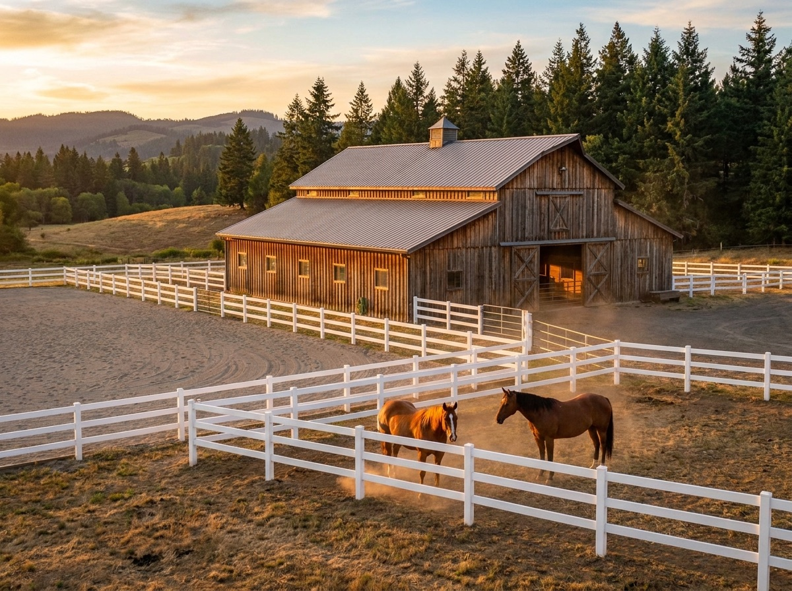

Few agents know both horse property and the Days Creek market from lived experience. Kimmy does.

Here's the thing about Days Creek: River-bottom pasture, big usable barns, and hunting ground out the back gate. Properties often include irrigation rights from the South Umpqua — a major value driver worth confirming against Watermaster records.
Layer Kimmy's horse property specialty on top: Kimmy is a lifelong horsewoman and active barrel racer — when she walks a horse property she sees footing, drainage, turnout, and hay storage the way only a rider can. From backyard two-stall setups to full training facilities with covered arenas, this is her home turf.
Days Creek follows the upper South Umpqua east of Canyonville — a ribbon of green pasture between timbered ridges, with a charter school that anchors a proud rural community. This is horse-and-cattle country, plain and simple.
| Population | ~250 |
| Drive to Roseburg | 35 minutes |
| Known for | South Umpqua River · Days Creek Charter School · Milo area |
| Lifestyle | Branding days, swimming holes, and rodeo weekends. |
You want an agent who combines genuine horse property expertise with parcel-level Days Creek knowledge. Kimmy Karlovich lives the rural Douglas County life daily — horses, land, hunting, rivers — and serves Days Creek as core territory (about 35 minutes from her Roseburg base). Call 541-643-9509 for a straight local conversation.
Plan on 1–2 usable acres per horse for turnout, plus your building envelope. Unirrigated pasture goes dormant in late summer, so most horse owners feed hay year-round regardless of acreage. Usable, well-drained acres are what count — not the number on the listing.
Base and drainage matter more than size. A 100x200 arena with a compacted base, proper crown, and good footing beats a bigger pad that ponds all winter. Kimmy runs barrels; she checks base, footing depth, and winter usability on every arena she shows.
Yes — the North Bank Habitat Management Area offers thousands of acres of riding, plus mountain trail systems in the Umpqua National Forest and beach riding at the coast about 90 minutes west. Many local riders also haul to arena events at the Douglas County Fairgrounds.
Whether you're buying your first five acres or selling the ranch that raised you — call, text, or email. Kimmy answers.
541-643-9509